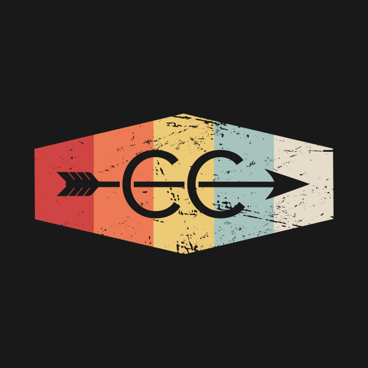

Cross-country
Cross-country is what I would call my main sport, meaning I would identify as a cross-country runner before anything else. Exept, obviously, when I say "I am a student athlete" which can mean just about any sport.
my best 5 kilometer time for cross country is sub 20, less than 20 miniutes, I got 19:50 which made my goal which I was trying to complete
this is the sport that I am most commited to and enjoy the most